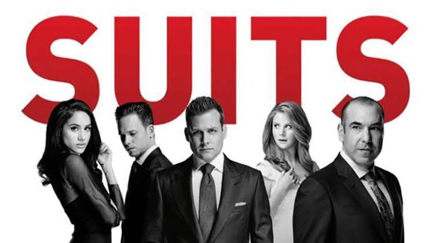

Suits: Homens de terno

Suits (Homens de Terno) é uma série de televisão de drama legal americano, criada e escrita por Aaron Korsh. A série estreou em 23 de junho de 2011, no canal USA Network, onde é exibida atualmente. Suits se passa em um escritório de advocacia fictício na cidade de Nova Iorque. A série acompaha os personagens Mike Ross, interpretado por Patrick J. Adams, e Harvey Specter, interpretado por Gabriel Macht.
Enredo
A série é rodada em torno de casos jurídicos sempre bem resolvidos, e com um toque de humor sarcástico, tudo isso dentro do escritório de advocacia "Pearson Hardman". Michael "Mike" Ross (Patrick J. Adams) é um garoto que foi expulso do colégio, mas com uma brilhante memória que lhe permitiu excelentes notas na prova de admissão em cursos de Direito, sem nunca ter obtido o diploma por não poder entrar em nenhuma faculdade. Harvey Specter (Gabriel Macht), um dos melhores advogados de Manhattan, oferece-lhe emprego na capacidade de advogado associado depois de o pôr à prova. Devido à política da firma de aceitar apenas ex-alunos da Escola de Direito de Harvard, ambos mentem que Mike é um graduado que frequentou Harvard.
1ª temporada (2011)
O ex-aluno Mike Ross ganha a vida ilegalmente fazendo a Prova de Admissão da Faculdade de Direito para outros. Para pagar pelos cuidados de sua avó, ele concorda em entregar maconha para seu melhor amigo Trevor, um traficante de drogas. Mike astutamente evita ser preso em uma picada, apenas para tropeçar em uma entrevista de emprego com Harvey Specter, considerada a melhor da cidade. O conhecimento de Mike sobre a lei impressiona Harvey o suficiente para conquistar a posição de associado, mesmo que Mike não tenha frequentado Harvard. Juntos, eles tentam defender a empresa Pearson Hardman, mantendo o segredo de que Mike é uma fraude.
2ª temporada (2012–13)
Jessica Pearson, a parceira administrativa, descobre o segredo de Mike, mas outras questões prevalecem quando o sócio fundador Daniel Hardman retorna à empresa, pressionando Jessica e Harvey. Mike começa a desenvolver um relacionamento com a assistente Rachel Zane, mas se vê perseguindo outros emaranhados românticos após a morte súbita de sua avó. Harvey e sua secretária Donna enfrentam acusações de enterrar evidências e precisam descobrir a verdade, mantendo evidências incriminatórias de Hardman, que a usaria para alavancar uma posição de gerente. A intensificação da ameaça de Hardman força Jessica em uma fusão com uma empresa britânica liderada por Edward Darby. Mike diz a Rachel que ele é uma fraude.
3ª temporada (2013-14)
A presença de Darby na empresa dá a Harvey a vantagem de buscar uma posição como parceiro nomeado. Enquanto isso, a fusão faz com que o sócio sênior Louis Litt entre em conflito com seu colega britânico. Ava Hessington, cliente da Darby International, leva Harvey a um longo julgamento contra seu ex-mentor, e o processo se transforma em uma acusação de assassinato. Percebendo que sua fraude não pode continuar para sempre, Mike deixa o recém-renomeado Pearson Spectre para assumir uma posição como banqueiro de investimentos.
4ª temporada (2014-15)
O novo emprego de Mike coloca ele e Harvey em lados opostos de uma batalha de aquisição, fazendo com que a SEC os acuse de conluio. Quando Mike é demitido, Louis se esforça ao máximo para convencer Mike a voltar para Pearson Spectre, em vez de trabalhar para o investidor bilionário obscuro Charles Forstman. Louis exige uma posição de parceiro de nome, competindo com Harvey, mas seus erros fazem com que ele seja demitido. Quando ele percebe que Mike nunca foi para Harvard, ele chantageia Jessica para recontratá-lo com a promoção que ele desejava. Mike propõe Rachel; Donna deixa Harvey para trabalhar para Louis.
5ª temporada (2015-16)
Harvey luta para que Donna volte a trabalhar para ele e começa a se abrir para um terapeuta sobre seu relacionamento quebrado com sua mãe. A insegurança de Louis, no entanto, e o desejo de prejudicar Harvey criam uma abertura para Jack Soloff, um parceiro ambicioso que está sendo manipulado por Hardman. Os planos do casamento de Rachel e seu relacionamento com os pais são ofuscados pelo segredo de Mike. Mike e Harvey renunciam para proteger seu futuro, mas Mike é preso abruptamente por fraude. Mais e mais pessoas envolvidas percebem que as alegações são verdadeiras e, diante de uma tenaz promotora Anita Gibbs, Mike aceita uma barganha, se declara culpado e se entrega para que ninguém mais vá para a cadeia. No casamento, Mike diz a Rachel que ele não vai se casar com ela agora, mas se ela ainda o quiser em dois anos, ele se casará com ela depois de sair da prisão. Harvey o escolta até a prisão, fazendo seus últimos adeus.
6ª temporada (2016-17)
Uma sentença de dois anos de prisão coloca Mike à mercê de Frank Gallo, um preso com rancor contra Harvey. Na Pearson Spectre Litt, poucos funcionários permanecem para ajudar. Rachel trabalha com um caso do Projeto Inocência para seu professor de direito; Jessica ajuda pro bono, mas se distrai dos assuntos da empresa e decide deixar sua posição para seguir sua própria vida. O colega de cela de Mike mostra-se fundamental em um acordo pela liberdade de Mike. Ele luta para que sua fraude seja de conhecimento público, mas consegue um emprego em uma clínica legal. Harvey ajuda Rachel e Mike a passar no exame da ordem e convence Mike a voltar para a empresa.
7ª temporada (2017-18)
Todos na empresa lutam para se ajustar a um novo normal sem Jessica. Donna assume a posição de COO, e o amigo de Harvey, Alex, se junta à equipe. Harvey começa a namorar sua ex-terapeuta, Paula; Louis vê um terapeuta próprio, com resultados mistos. Rachel começa sua carreira como advogada, tendo passado no tribunal. Mike continua trabalhando em casos pro bono na clínica, com a bênção de Harvey, mas um dos casos coloca Alex, Harvey e outros em risco. Louis e Sheila se reconectam; assim como Jessica com sua família em Chicago. Mike e Rachel aceitam uma oferta de emprego em Seattle para administrar sua própria empresa que assume ações coletivas e se casar antes de sair. Quando a temporada termina, um caso que coloca Spectre Litt em perigo é considerado obra dos parceiros de Robert Zane, Rand e Kaldor. Quando Zane descobre, ele une forças com Specter Litt.
8ª temporada (2018-19)
Quando Mike e Rachel vão embora depois de se casar, Robert Zane agora é o sócio-gerente de Zane Spectre Litt, com Donna permanecendo em seu cargo de COO. Robert contrata um novo parceiro sênior, sua mão direita e fixadora Samantha Wheeler. Wheeler mais tarde se torna um parceiro de nome ao lado de Alex Williams. Louis descobre que Sheila está grávida. Katrina Bennett é parceira sênior e luta com sentimentos românticos por seu parceiro pessoal casado. Donna e Harvey finalmente admitem seus sentimentos um pelo outro quando a 8ª temporada termina, mas o mau uso de Donna pelo cliente / namorado Thomas Kessler obriga Zane a sacrificar sua carreira jurídica pelo bem da empresa.
9ª temporada (2019)
Com Robert agora impedido, Faye Richardson, um mestre especial do bar é enviado para supervisionar a empresa devido à percepção das táticas secretas com as quais eles estão envolvidos há anos. Faye pretende desmontar e destruir a empresa, mas tem alguns esqueletos que podem ser usados para derrubá-la. No final da temporada, Louis se casa com Sheila e Sheila dá à luz seu bebê e Harvey se casa com Donna e eles se mudam com Mike e Rachel para Seattle. Louis nomeia Katrina como parceiro e continua a liderar a empresa Litt Wheeler Williams Bennett.